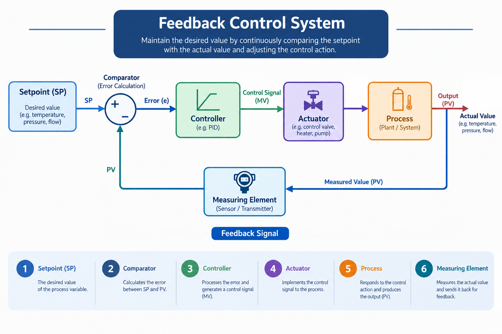
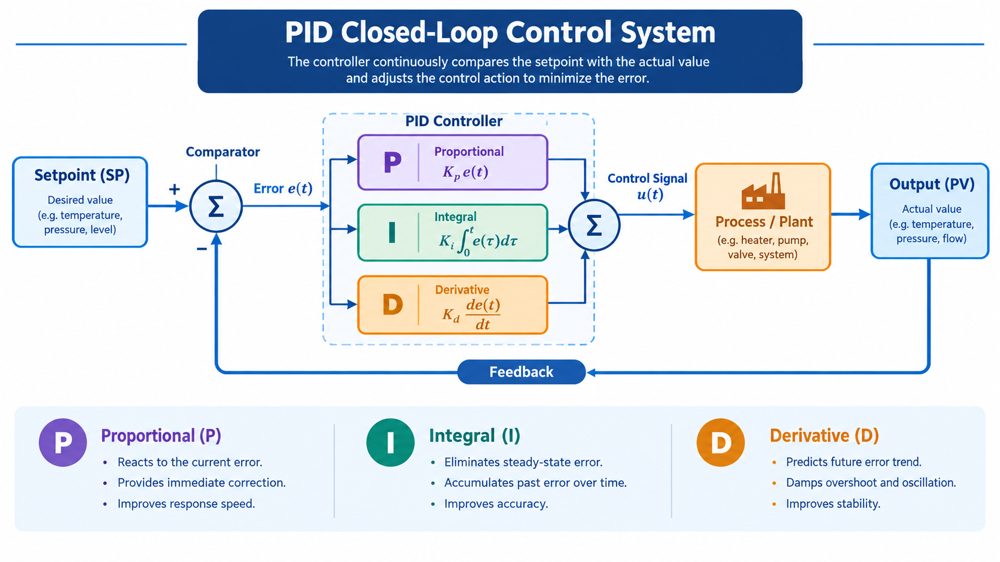

PID คือ อุปกรณ์หรืออัลกอริทึมที่ใช้ควบคุมค่าในกระบวนการผลิตให้อยู่ในระดับที่ต้องการโดยอัตโนมัติ ทำหน้าที่เสมือน "สมอง" ที่คอยปรับแต่งการทำงานของอุปกรณ์ในระบบ (เช่น ปรับการเปิด-ปิดวาล์ว) เพื่อรักษาค่าต่าง ๆ เช่น อุณหภูมิ ความดัน หรืออัตราการไหล ให้เสถียรที่สุด
ระบบควบคุม PID เป็น ตัวควบคุมแบบฟีดแบ็ก (Feedback Controller) ที่ใช้หลักการคำนวณค่าความผิดพลาด (Error) ระหว่างค่าที่ต้องการ (Setpoint Value = SV) กับค่าที่วัดได้ (Process Value = PV) แล้วสั่งการกลับไปยังระบบให้ปรับตัวเองให้เข้าใกล้เป้าหมายมากที่สุด ในการควบคุมอัตโนมัติ ระบบ PID Control มีตัวแปรหลัก 3 ตัวแปรที่ทำงานร่วมกันเป็นวงจร (Loop) คือ SV, PV และ MV เพื่อรักษาเสถียรภาพของระบบ โดยมีความเกี่ยวข้องและการทำงานสัมพันธ์กันดังนี้


PID Controller คือระบบควบคุมแบบป้อนกลับ (Feedback Control) ที่ใช้กันอย่างแพร่หลายในอุตสาหกรรมเคมี โดยแต่ละพารามิเตอร์ทำหน้าที่ดังนี้:
ทดลองปรับค่าด้านล่างเพื่อดูผลกระทบของ P, I, D ในกระบวนการทางอุดมคติที่ไม่มีสัญญาณรบกวน (Noise) และไม่มีเวลาหน่วง (Dead time)
ในแบบจำลองด้านบน ค่า \( K_p \)=5.0, \( K_i \)=0.25, \( K_d \)=0.0 ทำให้กราฟวิ่งเข้าหาเป้าอย่างรวดเร็วและนิ่งที่สุด แต่ในชีวิตจริง พฤติกรรมกระบวนการ (Process Dynamics) แตกต่างกัน อุณหภูมิตอบสนองช้าและมีเวลาหน่วง (Dead Time) หากใส่ค่า \( K_p \) มาก ระบบให้ความร้อนจะเปิดสุดจนระบบแกว่งและอันตราย หรือระบบการไหลที่มี Noise สูงก็ห้ามใช้ \( K_d \) เป็นอันขาด ลองเลือกกระบวนการจำลองเสมือนจริงด้านล่างเพื่อทดสอบพฤติกรรม:
ในอดีต การปรับจูนค่าพารามิเตอร์ระบบควบคุม (PID Tuning) มักอาศัยการสุ่มเดา (Trial & Error) ซึ่งนอกจากจะใช้เวลานานแล้ว ยังเสี่ยงทำให้เครื่องจักรเสียหาย วิศวกรรมควบคุมกระบวนการ (Process Control) ยุคใหม่จึงเปลี่ยนมาใช้วิธีการหา "แบบจำลองทางคณิตศาสตร์" ของเครื่องจักรนั้นๆ ก่อน แล้วจึงนำไปเข้าสมการเพื่อคำนวณหาค่า PID ที่เหมาะสมที่สุด
1. การถอดรหัสพฤติกรรมของกระบวนการด้วยโมเดล FOPDT (First-Order Plus Dead Time)
กว่า 80-90% ของกระบวนการในอุตสาหกรรมเคมี สามารถอธิบายพฤติกรรมได้ด้วยโมเดล FOPDT โมเดลนี้จะสรุปพฤติกรรมของระบบออกมาเป็นตัวเลข 3 ตัว (เปรียบเสมือน ข้อมูลจำเพาะทางของเครื่องจักร) ได้แก่:
2. วิธีการคำนวณหาพารามิเตอร์ PID (Tuning Rules)
เมื่อได้ค่า \( K \), \( \theta \), \( \tau \) จากการทำ Step Test แล้ว เราจะนำมาเข้าสมการคณิตศาสตร์ที่มีชื่อเสียง 2 ระเบียบวิธี:
วิธีที่ 1: สมการ Ziegler-Nichols (Z-N) Open-Loop Method
ค้นพบจากการทดลองทางสถิติ เน้นผลลัพธ์การตอบสนองที่ รวดเร็วที่สุด โดยยอมให้ระบบเกิดการแกว่งแบบ Quarter Amplitude Decay
วิธีที่ 2: วิธี IMC (Internal Model Control) หรือ Lambda (\( \lambda \)) Tuning
ข้อเสียของ Z-N คือระบบมักจะกระชาก อุตสาหกรรมยุคใหม่จึงนิยมใช้ Lambda Tuning ซึ่งเน้น "ความเสถียรและความนุ่มนวล" โดยผู้ใช้ต้องกำหนดตัวแปร \( \lambda \) ขึ้นมาเอง (ค่า \( \lambda \) คือ ความเร็วในการเข้าเป้าหมายที่ต้องการ ยิ่งค่าน้อยระบบยิ่งดุดัน ยิ่งค่ามากระบบยิ่งนุ่มนวลและปลอดภัย)
* หมายเหตุ: ค่า \( K_i \) คำนวณได้จาก \( K_i = \frac{K_p}{T_i} \) และค่า \( K_d \) คำนวณได้จาก \( K_d = K_p \cdot T_d \)
กรอกพารามิเตอร์ DNA ของกระบวนการที่ได้จากการทำ Step Test เพื่อคำนวณหาสมการที่เหมาะสมที่สุด
ค่าที่เหมาะสมสำหรับ Controller ของคุณคือ:
ในโรงงานอุตสาหกรรมเคมี ระบบควบคุม PID มีความสำคัญอย่างยิ่งด้วยเหตุผลหลัก ๆ ดังนี้:
| เหตุผลความสำคัญ | รายละเอียดในกระบวนการเคมี |
|---|---|
| 1. การรักษาความปลอดภัย (Safety) | ปฏิกิริยาเคมีหลายชนิดมีความไวต่ออุณหภูมิและความดันสูง หากระบบไม่คงที่อาจเกิดการระเบิดหรือสารเคมีรั่วไหลได้ PID จะคอยคุมไม่ให้ค่าเหล่านี้เกินขีดจำกัดอันตราย |
| 2. ความเสถียรของปฏิกิริยาเคมี (Reaction Stability) | ตัวเร่งปฏิกิริยา (Catalysts) และปฏิกิริยาเคมีส่วนใหญ่ต้องการสภาวะที่นิ่งมาก PID ช่วยควบคุมอัตราการป้อนสารและอุณหภูมิในหอผลิตให้คงที่ เพื่อให้ได้สารเคมีตามสูตร |
| 3. ควบคุมคุณภาพสารเคมี (Quality Control) | การเปลี่ยนแปลงของอุณหภูมิเพียงเล็กน้อยในหอกลั่นอาจทำให้ความบริสุทธิ์ของผลิตภัณฑ์เคมีลดลง PID ช่วยรักษามาตรฐานความบริสุทธิ์ให้คงที่ตลอด 24 ชั่วโมง |
| 4. ความคุ้มค่าทางพลังงาน (Energy Efficiency) | กระบวนการเคมีใช้พลังงานสูงมาก (เช่น การต้มน้ำยา หรือการทำความเย็น) การควบคุมที่แม่นยำของ PID ช่วยลดการสูญเสียพลังงานจากการปรับวาล์วหรือฮีตเตอร์ที่เกินความจำเป็น |
1. การใช้ PID ในหอกลั่น (Distillation Column)
หอกลั่นทำหน้าที่แยกสารผสมด้วยจุดเดือดที่ต่างกัน การควบคุมจึงต้องเน้นเรื่องความบริสุทธิ์ของสาร (Purity) และความสมดุลของมวลและพลังงาน โดยลูป PID ที่สำคัญมีดังนี้:
2. การใช้ PID ในหม้อปฏิกรณ์เคมี (Chemical Reactor)
หม้อปฏิกรณ์เคมี (โดยเฉพาะประเภทกวนผสมต่อเนื่อง หรือ CSTR) มักเกิดปฏิกิริยาคายความร้อน (Exothermic Reaction) ซึ่งหากคุมไม่อยู่ อุณหภูมิจะพุ่งสูงขึ้นเรื่อย ๆ จนเกิดการระเบิด (Thermal Runaway)
ความท้าทายที่สุดของหม้อปฏิกรณ์เคมี (โดยเฉพาะแบบ Exothermic หรือปฏิกิริยาคายความร้อน) คือ "ความหน่วงของระบบ (Process Dead Time)" และ "ความเสี่ยงในการเกิด Thermal Runaway" (อุณหภูมิพุ่งสูงขึ้นอย่างรวดเร็วจนคุมไม่ได้และระเบิด)
🌡️ ปัญหาที่พบบ่อย: ความร้อนส่งผ่านช้า (Thermal Lag)
สมมติว่าเซนเซอร์วัดได้ว่าสารเคมีในถังเริ่มร้อนเกินไป PID จะสั่งเปิดน้ำหล่อเย็นเข้าปลอกหุ้มถัง (Jacket) แต่กว่าความเย็นจากน้ำจะนำผ่านผนังเหล็กของถังเข้าไปถึงสารเคมีข้างใน ต้องใช้เวลา (เรียกว่า Dead Time) ในระหว่างที่รอนั้น ปฏิกิริยาเคมีก็ยังคายความร้อนไม่หยุด ทำให้อุณหภูมิยิ่งพุ่งสูงขึ้นไปอีก
⚙️ การทำงานของ P, I, D ในลูป
เพื่อแก้ปัญหานี้ การตั้งค่า PID จะต้องถูกออกแบบมาอย่างระมัดระวัง:
P (Proportional) - ปรับพอดี ๆ : ถ้าตั้งค่า P ให้ตอบสนองรุนแรงเกินไป (Gain สูง) วาล์วน้ำหล่อเย็นจะเปิดกระชากสุดและปิดสุดสลับไปมา ทำให้เกิดการแกว่ง (Oscillation) ของอุณหภูมิ ซึ่งอันตรายมาก
I (Integral) - ตั้งค่าให้ช้าลง (High Integral Time): ค่า I มีหน้าที่ลบความผิดพลาดสะสม แต่ในหม้อปฏิกรณ์เคมี ถ้าให้ค่า I ทำงานไวเกินไป มันจะสั่งเปิดน้ำหล่อเย็นค้างไว้นานเกินในจังหวะที่ระบบหน่วง ส่งผลให้อุณหภูมิ "เย็นเกินไป (Undershoot)" เมื่อความเย็นมาถึงจริง ๆ
D (Derivative) - พารามิเตอร์สำคัญของลูปนี้ (High Derivative Action): เนื่องจากระบบมีความหน่วง ค่า D จะเข้ามาทำหน้าที่ "คาดการณ์อนาคต" โดยวัดจาก "ความชันหรืออัตราการพุ่งขึ้นของอุณหภูมิ"
ตัวอย่าง: แม้ตอนนี้อุณหภูมิจะอยู่ที่ 65°C (ยังไม่ถึงเป้าหมายที่ 70°C) แต่ถ้าอุณหภูมิมันพุ่งจาก 60°C มา 65°C ภายในเวลาแค่ 2 วินาที ค่า D จะคำนวณทันทีว่า "อนาคตอันใกล้พุ่งทะลุเป้าแน่!" และจะสั่งเปิดน้ำหล่อเย็นล่วงหน้าทันทีโดยไม่ต้องรอให้อุณหภูมิถึง 70°C ช่วยเบรกความร้อนได้อย่างทันท่วงที
ในระบบควบคุมทั่วไป (Single Loop) เราใช้ PID ตัวเดียวคุมวาล์ว แต่ในวิศวกรรมเคมี มักจะมี "สิ่งรบกวน (Disturbance)" ภายนอกเข้ามาทำให้ระบบรวน เช่น ความดันน้ำหล่อเย็นในโรงงานต้นทางไม่นิ่ง ทำให้น้ำไหลเข้า Jacket เดี๋ยวแรงเดี๋ยวเบา
เพื่อแก้ปัญหานี้ เราจึงนำ PID สองตัวมาเชื่อมต่อกัน เรียกว่า Cascade Control
🔄 โครงสร้างของ Cascade Control
ระบบนี้จะแบ่ง PID ออกเป็น 2 ระดับ ทำงานประสานกันเหมือน "ผู้จัดการ" และ "หัวหน้าคนงาน"
1. Primary (Master) Controller - "ผู้จัดการ":
| ขั้นตอนการตอบสนอง | แบบ Single Loop (PID ตัวเดียว) | แบบ Cascade Control (PID ซ้อน PID) |
|---|---|---|
| โครงสร้างระบบ | PID วัดอุณหภูมิหอกลั่น ➔ สั่งเปิดวาล์วไอน้ำโดยตรง | Master PID วัดอุณหภูมิหอกลั่น ➔ สั่ง Slave PID ➔ สั่งเปิดวาล์วไอน้ำ |
| เมื่อความดันไอน้ำตก | ไอน้ำไหลเข้าลดลง แต่ PID ยังไม่รู้ เพราะต้องรอให้หอกลั่นเริ่ม "เย็นลง" ก่อน ซึ่งใช้เวลานาน (Delayed) | ไอน้ำไหลเข้าลดลง Slave PID (ตัวลูก) ที่เฝ้าวัดอัตราการไหลอยู่ที่ท่อจะรู้ทันที! |
| การแก้ไขปัญหา | กว่าอุณหภูมิหอกลั่นจะตกจน PID รู้ตัว สารเคมีในหอกลั่นก็รวนไปแล้ว ระบบต้องใช้เวลานานมากในการปรับอุณหภูมิกลับมา | Slave PID จัดการเปิดวาล์วเพิ่มให้ทันทีเพื่อดึงอัตราการไหลกลับมาเท่าเดิม โดยที่ความเย็นยังไม่ทันส่งผลไปถึงหอกลั่นด้วยซ้ำ |
| ผลลัพธ์ต่อกระบวนการ | อุณหภูมิแกว่งรุนแรง คุณภาพสารเคมีเสียหาย | อุณหภูมิหอกลั่นนิ่งสนิท เพราะสิ่งรบกวนถูกกำจัดไปตั้งแต่ที่ลูปท่อไอน้ำ |